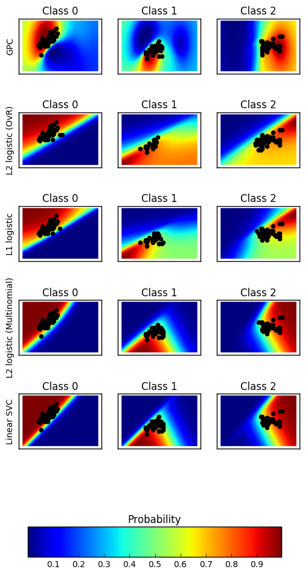
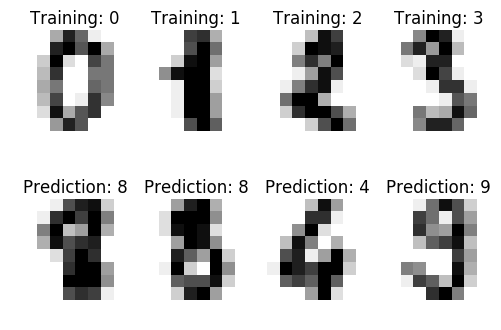
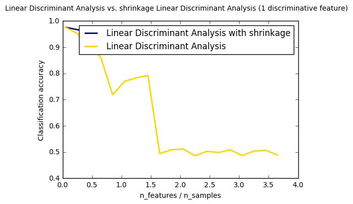
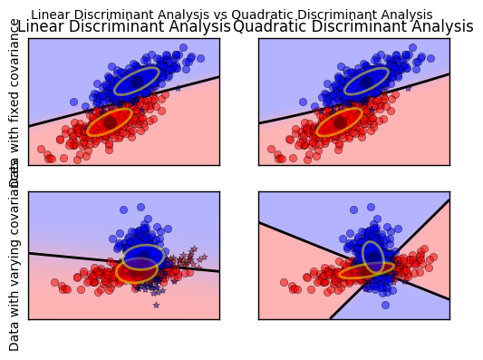

Classification
Probability plot
1. Plot classification probability (source)
Plot the classification probability for different classifiers. We use a 3 class dataset, and we classify it with
- a Support Vector classifier (
sklearn.svm.SVC), - L1 and L2 penalized logistic regression with either a One-Vs-Rest or multinomial setting (
sklearn.linear_model.LogisticRegression), and - Gaussian process classification (
sklearn.gaussian_process.kernels.RBF)
The logistic regression is not a multiclass classifier out of the box. As a result it can identify only the first class.
import matplotlib.pyplot as plt import numpy as np #========Models=================== from sklearn.linear_model import LogisticRegression from sklearn.svm import SVC from sklearn.gaussian_process import GaussianProcessClassifier from sklearn.gaussian_process.kernels import RBF #======= data set =============================== from sklearn import datasets
Data
iris = datasets.load_iris() X = iris.data[:, 0:2] # we only take the first two features for visualization y = iris.target n_features = X.shape[1]
C = 1.0 kernel = 1.0 * RBF([1.0, 1.0]) # for GPC
# Create different classifiers. The logistic regression cannot do # multiclass out of the box. classifiers = {'L1 logistic': LogisticRegression(C=C, penalty='l1'), 'L2 logistic (OvR)': LogisticRegression(C=C, penalty='l2'), 'Linear SVC': SVC(kernel='linear', C=C, probability=True, random_state=0), 'L2 logistic (Multinomial)': LogisticRegression( C=C, solver='lbfgs', multi_class='multinomial'), 'GPC': GaussianProcessClassifier(kernel) }
n_classifiers = len(classifiers) plt.figure(figsize=(3 * 2, n_classifiers * 2)) plt.subplots_adjust(bottom=.2, top=.95) xx = np.linspace(3, 9, 100) yy = np.linspace(1, 5, 100).T xx, yy = np.meshgrid(xx, yy) Xfull = np.c_[xx.ravel(), yy.ravel()] for index, (name, classifier) in enumerate(classifiers.items()): classifier.fit(X, y) y_pred = classifier.predict(X) classif_rate = np.mean(y_pred.ravel() == y.ravel()) * 100 print("classif_rate for %s : %f " % (name, classif_rate)) # View probabilities= probas = classifier.predict_proba(Xfull) n_classes = np.unique(y_pred).size for k in range(n_classes): plt.subplot(n_classifiers, n_classes, index * n_classes + k + 1) plt.title("Class %d" % k) if k == 0: plt.ylabel(name) imshow_handle = plt.imshow(probas[:, k].reshape((100, 100)), extent=(3, 9, 1, 5), origin='lower') plt.xticks(()) plt.yticks(()) idx = (y_pred == k) if idx.any(): plt.scatter(X[idx, 0], X[idx, 1], marker='o', c='k') ax = plt.axes([0.15, 0.04, 0.7, 0.05]) plt.title("Probability") plt.colorbar(imshow_handle, cax=ax, orientation='horizontal') plt.show()
classif_rate for GPC : 82.666667 classif_rate for L2 logistic (OvR) : 76.666667 classif_rate for L1 logistic : 79.333333 classif_rate for L2 logistic (Multinomial) : 82.000000 classif_rate for Linear SVC : 82.000000

Decision boundaries
2. Classifier comparison (source)
A comparison of a several classifiers in scikit-learn on synthetic datasets. The point of this example is to illustrate the nature of decision boundaries of different classifiers. This should be taken with a grain of salt, as the intuition conveyed by these examples does not necessarily carry over to real datasets. Particularly in high-dimensional spaces, data can more easily be separated linearly and the simplicity of classifiers such as naive Bayes and linear SVMs might lead to better generalization than is achieved by other classifiers.
The plots show training points in solid colors and testing points semi-transparent. The lower right shows the classification accuracy on the test set.
Models:
sklearn.tree.DecisionTreeClassifiersklearn.naive_bayes.GaussianNBsklearn.neighbors.KNeighborsClassifiersklearn.gaussian_process.GaussianProcessClassifiersklearn.gaussian_process.kernels.RBFsklearn.svm.SVCsklearn.ensemble.RandomForestClassifiersklearn.ensemble.AdaBoostClassifiersklearn.discriminant_analysis.QuadraticDiscriminantAnalysissklearn.neural_network.MLPClassifier
import numpy as np import matplotlib.pyplot as plt from matplotlib.colors import ListedColormap #============= preprocessing =========================== from sklearn.model_selection import train_test_split from sklearn.preprocessing import StandardScaler #============= models==================================== from sklearn.neural_network import MLPClassifier from sklearn.neighbors import KNeighborsClassifier from sklearn.svm import SVC from sklearn.gaussian_process import GaussianProcessClassifier from sklearn.gaussian_process.kernels import RBF from sklearn.tree import DecisionTreeClassifier from sklearn.ensemble import RandomForestClassifier, AdaBoostClassifier from sklearn.naive_bayes import GaussianNB from sklearn.discriminant_analysis import QuadraticDiscriminantAnalysis #========== data set===================================================== from sklearn.datasets import make_moons, make_circles, make_classification
h = .02 # step size in the mesh
Data preparation
X, y = make_classification(n_features=2, n_redundant=0, n_informative=2, random_state=1, n_clusters_per_class=1) rng = np.random.RandomState(2) X += 2 * rng.uniform(size=X.shape) linearly_separable = (X, y) datasets = [make_moons(noise=0.3, random_state=0), make_circles(noise=0.2, factor=0.5, random_state=1), linearly_separable ]
Assign Classifiers
names = ["Nearest Neighbors", "Linear SVM", "RBF SVM", "Gaussian Process", "Decision Tree", "Random Forest", "Neural Net", "AdaBoost", "Naive Bayes", "QDA"] classifiers = [ KNeighborsClassifier(3), SVC(kernel="linear", C=0.025), SVC(gamma=2, C=1), GaussianProcessClassifier(1.0 * RBF(1.0), warm_start=True), DecisionTreeClassifier(max_depth=5), RandomForestClassifier(max_depth=5, n_estimators=10, max_features=1), MLPClassifier(alpha=1), AdaBoostClassifier(), GaussianNB(), QuadraticDiscriminantAnalysis()]
Plot
figure = plt.figure(figsize=(27, 9)) i = 1 # iterate over datasets for ds_cnt, ds in enumerate(datasets): # preprocess dataset, split into training and test part X, y = ds X = StandardScaler().fit_transform(X) X_train, X_test, y_train, y_test = \ train_test_split(X, y, test_size=.4, random_state=42) x_min, x_max = X[:, 0].min() - .5, X[:, 0].max() + .5 y_min, y_max = X[:, 1].min() - .5, X[:, 1].max() + .5 xx, yy = np.meshgrid(np.arange(x_min, x_max, h), np.arange(y_min, y_max, h)) # just plot the dataset first cm = plt.cm.RdBu cm_bright = ListedColormap(['#FF0000', '#0000FF']) ax = plt.subplot(len(datasets), len(classifiers) + 1, i) if ds_cnt == 0: ax.set_title("Input data") # Plot the training points ax.scatter(X_train[:, 0], X_train[:, 1], c=y_train, cmap=cm_bright) # and testing points ax.scatter(X_test[:, 0], X_test[:, 1], c=y_test, cmap=cm_bright, alpha=0.6) ax.set_xlim(xx.min(), xx.max()) ax.set_ylim(yy.min(), yy.max()) ax.set_xticks(()) ax.set_yticks(()) i += 1 # iterate over classifiers for name, clf in zip(names, classifiers): ax = plt.subplot(len(datasets), len(classifiers) + 1, i) clf.fit(X_train, y_train) score = clf.score(X_test, y_test) # Plot the decision boundary. For that, we will assign a color to each # point in the mesh [x_min, x_max]x[y_min, y_max]. if hasattr(clf, "decision_function"): Z = clf.decision_function(np.c_[xx.ravel(), yy.ravel()]) else: Z = clf.predict_proba(np.c_[xx.ravel(), yy.ravel()])[:, 1] # Put the result into a color plot Z = Z.reshape(xx.shape) ax.contourf(xx, yy, Z, cmap=cm, alpha=.8) # Plot also the training points ax.scatter(X_train[:, 0], X_train[:, 1], c=y_train, cmap=cm_bright) # and testing points ax.scatter(X_test[:, 0], X_test[:, 1], c=y_test, cmap=cm_bright, alpha=0.6) ax.set_xlim(xx.min(), xx.max()) ax.set_ylim(yy.min(), yy.max()) ax.set_xticks(()) ax.set_yticks(()) if ds_cnt == 0: ax.set_title(name) ax.text(xx.max() - .3, yy.min() + .3, ('%.2f' % score).lstrip('0'), size=15, horizontalalignment='right') i += 1 plt.tight_layout() plt.show()

Digit Classifier
3. Recognizing hand-written digits(source)
An example showing how the scikit-learn can be used to recognize images of hand-written digits.
# Standard scientific Python imports import matplotlib.pyplot as plt # Import datasets, classifiers and performance metrics from sklearn import datasets, svm, metrics
The data that we are interested in is made of 8x8 images of digits, let's
have a look at the first 4 images, stored in the images attribute of the
dataset. If we were working from image files, we could load them using
matplotlib.pyplot.imread. Note that each image must have the same size. For these
images, we know which digit they represent: it is given in the 'target' of
the dataset.
- The digits dataset
digits = datasets.load_digits()
- To apply a classifier on this data, we need to flatten the image, to turn the data in a (samples, feature) matrix:
n_samples = len(digits.images) data = digits.images.reshape((n_samples, -1))
- Create a classifier: a support vector classifier
classifier = svm.SVC(gamma=0.001)
- We learn the digits on the first half of the digits
classifier.fit(data[:n_samples / 2], digits.target[:n_samples / 2])
SVC(C=1.0, cache_size=200, class_weight=None, coef0=0.0, decision_function_shape=None, degree=3, gamma=0.001, kernel='rbf', max_iter=-1, probability=False, random_state=None, shrinking=True, tol=0.001, verbose=False)
- Now predict the value of the digit on the second half:
expected = digits.target[n_samples / 2:] predicted = classifier.predict(data[n_samples / 2:])
print("Classification report for classifier %s:\n%s\n" % (classifier, metrics.classification_report(expected, predicted))) print("Confusion matrix:\n%s" % metrics.confusion_matrix(expected, predicted))
Classification report for classifier SVC(C=1.0, cache_size=200, class_weight=None, coef0=0.0,
decision_function_shape=None, degree=3, gamma=0.001, kernel='rbf',
max_iter=-1, probability=False, random_state=None, shrinking=True,
tol=0.001, verbose=False):
precision recall f1-score support
0 1.00 0.99 0.99 88
1 0.99 0.97 0.98 91
2 0.99 0.99 0.99 86
3 0.98 0.87 0.92 91
4 0.99 0.96 0.97 92
5 0.95 0.97 0.96 91
6 0.99 0.99 0.99 91
7 0.96 0.99 0.97 89
8 0.94 1.00 0.97 88
9 0.93 0.98 0.95 92
avg / total 0.97 0.97 0.97 899
Confusion matrix:
[[87 0 0 0 1 0 0 0 0 0]
[ 0 88 1 0 0 0 0 0 1 1]
[ 0 0 85 1 0 0 0 0 0 0]
[ 0 0 0 79 0 3 0 4 5 0]
[ 0 0 0 0 88 0 0 0 0 4]
[ 0 0 0 0 0 88 1 0 0 2]
[ 0 1 0 0 0 0 90 0 0 0]
[ 0 0 0 0 0 1 0 88 0 0]
[ 0 0 0 0 0 0 0 0 88 0]
[ 0 0 0 1 0 1 0 0 0 90]]
images_and_labels = list(zip(digits.images, digits.target)) for index, (image, label) in enumerate(images_and_labels[:4]): plt.subplot(2, 4, index + 1) plt.axis('off') plt.imshow(image, cmap=plt.cm.gray_r, interpolation='nearest') plt.title('Training: %i' % label) images_and_predictions = list(zip(digits.images[n_samples / 2:], predicted)) for index, (image, prediction) in enumerate(images_and_predictions[:4]): plt.subplot(2, 4, index + 5) plt.axis('off') plt.imshow(image, cmap=plt.cm.gray_r, interpolation='nearest') plt.title('Prediction: %i' % prediction) plt.show()

Discriminant Analysis
4. Normal and Shrinkage Linear Discriminant Analysis for classification(source)
from __future__ import division import numpy as np import matplotlib.pyplot as plt from sklearn.datasets import make_blobs from sklearn.discriminant_analysis import LinearDiscriminantAnalysis
n_train = 20 # samples for training n_test = 200 # samples for testing n_averages = 50 # how often to repeat classification n_features_max = 75 # maximum number of features step = 4 # step size for the calculation
def generate_data(n_samples, n_features): """Generate random blob-ish data with noisy features. This returns an array of input data with shape `(n_samples, n_features)` and an array of `n_samples` target labels. Only one feature contains discriminative information, the other features contain only noise. """ X, y = make_blobs(n_samples=n_samples, n_features=1, centers=[[-2], [2]]) # add non-discriminative features if n_features > 1: X = np.hstack([X, np.random.randn(n_samples, n_features - 1)]) return X, y
acc_clf1, acc_clf2 = [], [] n_features_range = range(1, n_features_max + 1, step) for n_features in n_features_range: score_clf1, score_clf2 = 0, 0 for _ in range(n_averages): X, y = generate_data(n_train, n_features) clf1 = LinearDiscriminantAnalysis(solver='lsqr', shrinkage='auto').fit(X, y) clf2 = LinearDiscriminantAnalysis(solver='lsqr', shrinkage=None).fit(X, y) X, y = generate_data(n_test, n_features) score_clf1 += clf1.score(X, y) score_clf2 += clf2.score(X, y) acc_clf1.append(score_clf1 / n_averages) acc_clf2.append(score_clf2 / n_averages) features_samples_ratio = np.array(n_features_range) / n_train
plt.plot(features_samples_ratio, acc_clf1, linewidth=2, label="Linear Discriminant Analysis with shrinkage", color='navy') plt.plot(features_samples_ratio, acc_clf2, linewidth=2, label="Linear Discriminant Analysis", color='gold') plt.xlabel('n_features / n_samples') plt.ylabel('Classification accuracy') plt.legend(loc=1, prop={'size': 12}) plt.suptitle('Linear Discriminant Analysis vs. \ shrinkage Linear Discriminant Analysis (1 discriminative feature)') plt.show()

Discriminant Analysis
5. Linear and Quadratic Discriminant Analysis with covariance ellipsoid (source)
This example plots the covariance ellipsoids of each class and decision boundary learned by LDA and QDA. The ellipsoids display the double standard deviation for each class. With LDA, the standard deviation is the same for all the classes, while each class has its own standard deviation with QDA.
from scipy import linalg import numpy as np import matplotlib.pyplot as plt import matplotlib as mpl from matplotlib import colors from sklearn.discriminant_analysis import LinearDiscriminantAnalysis from sklearn.discriminant_analysis import QuadraticDiscriminantAnalysis
- colormap
cmap = colors.LinearSegmentedColormap( 'red_blue_classes', {'red': [(0, 1, 1), (1, 0.7, 0.7)], 'green': [(0, 0.7, 0.7), (1, 0.7, 0.7)], 'blue': [(0, 0.7, 0.7), (1, 1, 1)]}) plt.cm.register_cmap(cmap=cmap)
- generate datasets
def dataset_fixed_cov(): '''Generate 2 Gaussians samples with the same covariance matrix''' n, dim = 300, 2 np.random.seed(0) C = np.array([[0., -0.23], [0.83, .23]]) X = np.r_[np.dot(np.random.randn(n, dim), C), np.dot(np.random.randn(n, dim), C) + np.array([1, 1])] y = np.hstack((np.zeros(n), np.ones(n))) return X, y def dataset_cov(): '''Generate 2 Gaussians samples with different covariance matrices''' n, dim = 300, 2 np.random.seed(0) C = np.array([[0., -1.], [2.5, .7]]) * 2. X = np.r_[np.dot(np.random.randn(n, dim), C), np.dot(np.random.randn(n, dim), C.T) + np.array([1, 4])] y = np.hstack((np.zeros(n), np.ones(n))) return X, y
- plot functions
def plot_data(lda, X, y, y_pred, fig_index): splot = plt.subplot(2, 2, fig_index) if fig_index == 1: plt.title('Linear Discriminant Analysis') plt.ylabel('Data with fixed covariance') elif fig_index == 2: plt.title('Quadratic Discriminant Analysis') elif fig_index == 3: plt.ylabel('Data with varying covariances') tp = (y == y_pred) # True Positive tp0, tp1 = tp[y == 0], tp[y == 1] X0, X1 = X[y == 0], X[y == 1] X0_tp, X0_fp = X0[tp0], X0[~tp0] X1_tp, X1_fp = X1[tp1], X1[~tp1] alpha = 0.5 # class 0: dots plt.plot(X0_tp[:, 0], X0_tp[:, 1], 'o', alpha=alpha, color='red') plt.plot(X0_fp[:, 0], X0_fp[:, 1], '*', alpha=alpha, color='#990000') # dark red # class 1: dots plt.plot(X1_tp[:, 0], X1_tp[:, 1], 'o', alpha=alpha, color='blue') plt.plot(X1_fp[:, 0], X1_fp[:, 1], '*', alpha=alpha, color='#000099') # dark blue # class 0 and 1 : areas nx, ny = 200, 100 x_min, x_max = plt.xlim() y_min, y_max = plt.ylim() xx, yy = np.meshgrid(np.linspace(x_min, x_max, nx), np.linspace(y_min, y_max, ny)) Z = lda.predict_proba(np.c_[xx.ravel(), yy.ravel()]) Z = Z[:, 1].reshape(xx.shape) plt.pcolormesh(xx, yy, Z, cmap='red_blue_classes', norm=colors.Normalize(0., 1.)) plt.contour(xx, yy, Z, [0.5], linewidths=2., colors='k') # means plt.plot(lda.means_[0][0], lda.means_[0][1], 'o', color='black', markersize=10) plt.plot(lda.means_[1][0], lda.means_[1][1], 'o', color='black', markersize=10) return splot
def plot_ellipse(splot, mean, cov, color): v, w = linalg.eigh(cov) u = w[0] / linalg.norm(w[0]) angle = np.arctan(u[1] / u[0]) angle = 180 * angle / np.pi # convert to degrees # filled Gaussian at 2 standard deviation ell = mpl.patches.Ellipse(mean, 2 * v[0] ** 0.5, 2 * v[1] ** 0.5, 180 + angle, facecolor=color, edgecolor='yellow', linewidth=2, zorder=2) ell.set_clip_box(splot.bbox) ell.set_alpha(0.5) splot.add_artist(ell) splot.set_xticks(()) splot.set_yticks(()) def plot_lda_cov(lda, splot): plot_ellipse(splot, lda.means_[0], lda.covariance_, 'red') plot_ellipse(splot, lda.means_[1], lda.covariance_, 'blue') def plot_qda_cov(qda, splot): plot_ellipse(splot, qda.means_[0], qda.covariances_[0], 'red') plot_ellipse(splot, qda.means_[1], qda.covariances_[1], 'blue')
for i, (X, y) in enumerate([dataset_fixed_cov(), dataset_cov()]): # Linear Discriminant Analysis lda = LinearDiscriminantAnalysis(solver="svd", store_covariance=True) y_pred = lda.fit(X, y).predict(X) splot = plot_data(lda, X, y, y_pred, fig_index=2 * i + 1) plot_lda_cov(lda, splot) plt.axis('tight') # Quadratic Discriminant Analysis qda = QuadraticDiscriminantAnalysis(store_covariances=True) y_pred = qda.fit(X, y).predict(X) splot = plot_data(qda, X, y, y_pred, fig_index=2 * i + 2) plot_qda_cov(qda, splot) plt.axis('tight') plt.suptitle('Linear Discriminant Analysis vs Quadratic Discriminant Analysis') plt.show()
